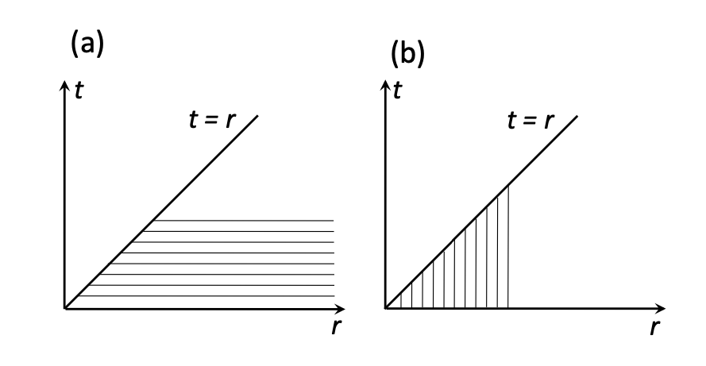

Integral Transforms#
We have already introduced the Laplace integral transform and used it in order to solve ordinary differential equations. In this chapter, we will use Laplace and Fourier integral transforms to solve partial differential equations (PDE). The strategy of the integral transform method is to reduce the number of variables in a PDE and to convert it to a simpler PDE or to an ordinary differential equation.
Laplace Transform#
Laplace transforms are a natural method of choice if the problem concerns a process where at least one of the variables can have values from zero to infinity. We will demonstrate the application of integral transforms to solving PDEs using particular examples.
Example#
Consider a semi-infinite tube filled initially with pure water and brought into contact with a salt solution maintained at a fixed concentration. Find the total amount of salt diffused into the tube by the time \( t \) if the diffusion constant is \( k \).
The semi-infinite tube is a one-dimensional system. Therefore, the concentration of salt in the tube \( u \) can be described using two variables only: \( x \) – the distance from the salt container and \( t \) – the duration of the contact. Hence, \( u = u(x, t) \).
The diffusion process is described by the equation:
and the following conditions:
\( u(0, t) = u_0 \), i.e., the concentration of the salt solution “at the source” is the same at all times.
\( u(x, 0) = 0 \), i.e., the tube contained pure water prior to being brought into contact with the salt reservoir at \( t = 0 \).
\( u(1,t) = 0 \), i.e., salt will never reach the far end of the semi-infinite tube.
\( u(x,t) \) is finite for all \( x \) and all \( t \).
Our strategy is to convert this PDE into an ODE by eliminating the dependence on one of the variables.
Taking the Laplace transform from both sides with respect to \( t \) gives:
Swapping the order of the derivatives and integrals:
This gives:
where \( U(x,s) \) is the Laplace transform of \( u(x,t) \). Integrating the right-hand side by parts, as done previously:
Taking into account the boundary condition \( u(x, 0) = 0 \), becomes:
which is an ordinary differential equation with respect to \( U(x,s) \).
The solution to this equation is given by:
where \( A(s) \) and \( B(s) \) are, in general, functions of \( s \). Only one of the terms here is physically meaningful in the context of this problem. Indeed, assuming that \( u(1, t) = 0 \), i.e., salt never reaches the far end of the semi-infinite tube, we have:
The function \( B(s) \) can be determined from the boundary conditions by calculating the Laplace transform of \( u(0, t) = u_0 \):
Hence:
Thus, \( U(x, s) = \frac{u_0}{\sqrt{k}} e^{-\sqrt{\frac{s}{k}} x} \).
Now, to find the total amount of salt diffused into the tube, we need to calculate:
However, since the problem requires only \( w(t) \), we do not need to find \( u(x,t) \) explicitly.
To find \( w(t) \), we consider the Laplace transform of \( w(t) \):
The inner integral is the Laplace transform of \( u(x,t) \), and hence:
Substituting \( U(x, s) \), the integral can be evaluated:
Thus:
Finally, \( w(t) \) can be found by consulting a table of Laplace transforms:
Exercise#
A semi-infinite metal bar has an initial temperature \( T = 0 \, \text{K} \) everywhere along the bar. At time \( t = 0 \), one end of the bar is brought into contact with a constant temperature heat reservoir at \( T = 100 \, \text{K} \). Find the temperature distribution along the bar after time \( t \).
Inverse Laplace Transform#
Consider a 2nd-order ODE
where the boundary conditions imposed on the function \( y \) are \( y(0) = y'(0) = 0 \), \( t \geq 0 \), and \( A \), \( B \), \( C \) are constant coefficients.
The Laplace transform of this equation gives
where \( Y(p) \) is the Laplace transform of \( y(t) \) and \( F(p) \) is the transform of \( f(t) \). From here, we find
where \( a \) and \( b \) are constants.
We already know the inverse Laplace transform of \( F(p) \) (it is given to us as \( f(t) \)) and we can always find the inverse transform of
by inspecting the table of Laplace transforms. Can we find the inverse transform of \( Y(p) \)?
More generally, assume that inverse Laplace transforms of \( H(p) \) and \( G(p) \) are known functions \( h(t) \) and \( g(t) \), respectively. How do we find the inverse Laplace transform of \( H(p) G(p) \)?
Convolution#
Consider the product \( H(p) G(p) \), where \( H(p) \) and \( G(p) \) are Laplace transforms of \( h(t) \) and \( g(t) \), respectively.
Introduce a new variable \( r = s + t \) for any fixed \( t \). Then, \( s = r - t \) and \( ds = dr \). To define the limits of integration with respect to \( dr \), we notice that \( r = t \) if \( s = 0 \) and \( r = \infty \) if \( s = \infty \). Therefore,
The diagram below shows schematically the order of integration in this equation: each horizontal line corresponds to the inner integration from \( r = t \) to \( r = \infty \); all lines together cover one half of the first quadrilateral, which corresponds to the outer integral for \( 0 \leq t < \infty \).

(a) Inner integral (over \( r \)): \( t \leq r < 1 \), outer integral (over \( t \)): \( 0 \leq t < 1 \);
(b) Inner integral (over \( t \)): \( 0 \leq t < r \), outer integral (over \( r \)): \( 0 \leq r < 1 \).
We can change the order of integration with respect to \( t \) and \( r \) in the equation, as illustrated in Fig. 6.1(b), so as
This inner integral is called the convolution of functions \( g(x) \) and \( h(x) \). (Do not confuse the symbol \( \ast \) indicating the convolution operation with that indicating the multiplication operation.)
Thus, Equation (6.5) can be written as
i.e., the Laplace transform of a convolution of functions \( h(x) \) and \( g(x) \) equals the product of the Laplace transforms of these functions. In other words, \( g \ast h \) is the inverse Laplace transform of \( H(p) G(p) \).
Example#
Find the solution of the equation
using the convolution method. After Laplace transform:
which gives
The inverse Laplace transform of \( L(e^{-t}) \) is \( e^{-t} \). Therefore,
To find \( y(t) \), we need to calculate the convolution of \( e^{-t} - e^{-2t} \) and \( e^{-t} \):
This simplifies to:
Convolution theorem.#
Let us consider two functions \( f(x) \) and \( g(x) \). Their Fourier transforms can be defined as
and
Note that other definitions of the Fourier transform may use a different factor in front of the integral.
Is it possible to give meaning to the product \( F(k)G(k) \)? Rewrite \( F(k)G(k) \) as:
For any fixed \( t \), we can introduce a new variable \( p = s+t \). Then, \( s = p - t \) and \( ds = dp \). Rewrite the integral in terms of variables \( p \) and \( t \). Note that the integration limits remain unchanged:
Change the order of integration with respect to \( dt \) and \( dp \) and multiply both parts of the equation by \( p^{2\pi} \):
The integral in square parenthesis is called the convolution (note that the integration limits are different from those defined for the case of the Laplace transform):
Thus the equation states that the product of the Fourier transforms of functions \( f(x) \) and \( g(x) \) is proportional to the Fourier transform of a convolution of these functions. This statement is called the convolution theorem.
Exercise#
Demonstrate that
Temperature distribution in an infinite bar#
An infinite metal bar has the initial temperature distribution along the bar \( f(x) \). Find the temperature distribution after time \( t \).
Let \( u(x,t) \) be the temperature at a point \( x \) along the bar at the time \( t \). Assume that the far ends of the bar remain cold, i.e.
The temperature along the bar is described by the heat flow equation
Natural boundary conditions for this problem are:
The far ends of the bar remain cold: \( u(x,t) \to 0 \) for \( x \to \pm 1 \).
The temperature does not change at the ends of the bar: \( \frac{\partial u(x, t)}{\partial x} \to 0 \) for \( x \to \pm 1 \).
Apply the Fourier transform to both parts of the equation:
The LHS can be integrated by parts:
while in the RHS, \( \frac{\partial}{\partial t} \) can be moved outside of the integration. Thus, the PDE is transformed into:
The latter equation has a solution of the form:
Function \( U(k,0) \) is defined from the initial condition at the time \( t = 0 \):
i.e. \( U(k,0) \) is given by the Fourier transform of the function \( f(x) \).
Thus,
where we introduced the function \( G(k,t) \) defined as:
Function \( G(k,t) \) can be considered as a Fourier transform of some function \( g(x,t) \). Since \( U(k,t) \) is represented as a product of two Fourier transforms, we can apply the convolution theorem to find \( u(x,t) \):
In other words, the problem will be solved if we find function \( g(x,t) \) explicitly. Function \( g(x,t) \) can be found by the inverse Fourier transform of \( G(k,t) \):
To take this integral, first complete the square:
Now, using the fact that:
we obtain:
Finally, the temperature distribution at time \( t \) can be calculated, using function \( g(x,t) \) and the initial temperature distribution \( f(x) \).